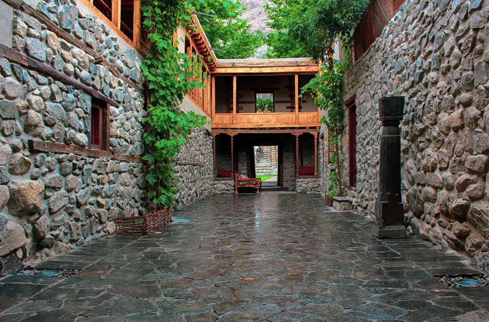

<div class="portfolio-single-load clearfix">
    <div class="custom-full-width-box">
        <div class="custom-container">
            <div class="custom-row align-items-center">
                <div class="custom-image-column">
                    
                </div>
                <div class="custom-text-column">
                    <h2 class="custom-heading">Khaplu</h2>
                    <p class="custom-paragraph">
                        Steeped in history and surrounded by snow-capped peaks, Khaplu is a charming town nestled in the heart of Gilgit-Baltistan. With a population of approximately 12,000 people, Khaplu is renowned for its historic Khaplu Fort, which dates back over 700 years and offers panoramic views of the surrounding valleys and mountains. Visitors can explore the town's winding streets, visit ancient mosques and monasteries, and interact with friendly locals to learn about the region's rich cultural heritage and traditions.
                    </p>
                </div>
            </div>
        </div>
    </div><!-- .custom-full-width-box end -->

</div><!-- end single-project -->
